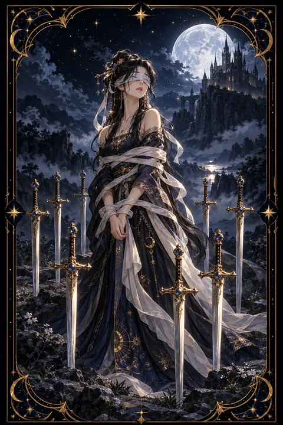

이 게시물은 쿠팡 파트너스 활동의 일환으로, 이에 따른 일정액의 수수료를 제공받습니다.


검 8 카드 — 스스로 만든 속박
검 8 카드 한눈에 보기
검 8 카드 상징 읽기

동네보살의 카드 그림은 전통 라이더–웨이트 덱의 뜻을 새 그림으로 옮긴 것입니다. 아래 상징 설명은 전통 덱의 그림을 기준으로 합니다.
검 8에는 흰 천으로 두 눈을 가리고 몸이 끈으로 묶인 여인이 서 있습니다. 그런데 끈은 헐겁고 발은 자유로워서 마음만 먹으면 걸어 나갈 수 있는 상태입니다. 속박이 실제보다 인식 속에서 더 크다는 점을 보여 주는 장치입니다.
여인을 둘러싼 여덟 자루의 검은 뒤와 양옆에 꽂혀 있지만 앞쪽은 비어 있습니다. 막혔다고 느끼는 순간에도 빠져나갈 길은 남아 있다는 뜻입니다. 검이 생각과 말을 상징하는 수트라는 점에서 여인을 가둔 것은 스스로의 생각과 남들의 말이라고 해석합니다.
발밑에 고인 물웅덩이는 가라앉은 감정과 흐려진 판단을 나타냅니다. 멀리 벼랑 위에 선 성은 여인이 떠나온 안전한 자리이자 돌아갈 수 있는 목표입니다. 잿빛 하늘은 답답하지만 영원하지 않은 한때의 날씨를 말해 줍니다.
검 8 카드 정방향 뜻
정방향 검 8은 스스로 한계를 정해 두고 그 안에 갇혀 있는 상태를 뜻합니다. 상황이 어려운 것은 사실이지만 실제로 막힌 길보다 막혔다고 믿는 길이 더 많을 가능성이 큽니다. 누군가의 평가, 과거의 실패, 막연한 불안이 눈가리개가 되어 선택지를 가리고 있습니다.
이 카드가 나왔다면 지금의 판단이 사실에 근거한 것인지 두려움에서 나온 것인지 구분해 보는 것이 먼저입니다. 가까운 사람에게 지금 처지를 털어놓으면 혼자서는 보지 못한 출구가 드러나기도 합니다.
무력감을 느끼는 것은 당연하지만 그 감정이 전부는 아닙니다. 끈은 느슨하고 앞길은 열려 있습니다. 거창한 탈출 계획보다 오늘 할 수 있는 작은 행동 하나가 매듭을 푸는 시작이 됩니다. 스스로에게 허락하지 않았던 선택지를 하나 적어 보고 그것이 정말 불가능한지 따져 보세요.
검 8 카드 역방향 뜻
역방향 검 8은 눈가리개를 벗고 묶인 끈을 스스로 풀어내는 해방의 흐름입니다. 오랫동안 자신을 가두던 생각이 사실과 다르다는 것을 깨닫고 새로운 관점으로 상황을 바라보게 됩니다. 도움을 청할 용기가 생기거나 뜻밖의 조언이 출구가 되기도 합니다.
이 시기에는 미뤄 둔 결정을 내리기 좋습니다. 불편했던 관계나 환경에서 한 걸음 물러나 자신의 자리를 다시 정할 수 있습니다. 다만 풀려난 기쁨에 서둘러 움직이면 발밑을 살피지 못할 수 있으니 속도를 조절하는 편이 좋습니다.
드물게는 벗어날 기회가 왔는데도 익숙한 불안 속으로 스스로 되돌아가는 일도 있습니다. 그럴 때는 무엇이 두려운지 구체적으로 적어 보세요. 이름이 붙은 두려움은 크기가 줄어들고 다시 움직일 힘이 돌아옵니다.
연애에서 검 8 카드
솔로라면 상처받을까 두려워 스스로 문을 닫아 두고 있을 수 있습니다. 좋은 사람이 없다고 느끼는 것이 실제 상황인지 마음의 벽 때문인지 돌아보세요. 작은 모임에 나가거나 오래 연락하지 못한 지인에게 안부를 건네는 것만으로도 흐름이 달라집니다.
연애 중이라면 관계 속에서 하고 싶은 말을 삼키며 답답함을 느끼는 상황일 수 있습니다. 상대의 반응을 미리 단정하고 참기만 하면 오해가 쌓입니다. 원하는 것을 짧고 분명하게 전하면 생각보다 쉽게 풀리는 경우가 많습니다. 반대로 관계가 자신을 옭아맨다고 느낀다면 그 감정이 어디서 오는지 차분히 살펴볼 때입니다. 혼자 판단하기 어렵다면 믿을 만한 친구와 이야기를 나누며 시야를 넓혀 보세요. 서로에게 바라는 점을 한 가지씩 적어 나눠 보는 것도 막힌 대화를 여는 좋은 방법입니다.
재회·속마음 질문에서 검 8 카드
재회 질문에서 검 8은 다가가고 싶지만 거절이 두려워 제자리에 멈춘 모습을 보여 줍니다. 상대도 비슷한 망설임 속에 있을 수 있어 양쪽 모두 먼저 움직이지 못하는 흐름입니다. 지금 필요한 것은 결과를 미리 단정하지 않는 태도입니다. 부담 없는 짧은 연락으로 문을 두드려 보되 답이 늦더라도 스스로를 탓하지 않도록 마음을 다잡아 두세요. 헤어진 이유를 떠올릴 때도 모든 잘못을 혼자 떠안고 있지는 않은지 살펴보는 편이 좋습니다. 거꾸로 놓인 검 8이라면 서로를 가로막던 오해가 풀릴 여지가 커집니다. 다만 다시 만나는 것이 자신을 또 묶는 일이 되지 않는지도 함께 살펴보세요.
일·금전에서 검 8 카드
일과 직장에서는 선택지가 없다고 느끼며 답답한 자리에 머무는 모습입니다. 업무가 과중하거나 평가가 불안해도 쉽게 움직이지 못하는 이유가 실제 조건 때문인지 막연한 불안 때문인지 나눠서 따져 보세요. 상사나 동료에게 조율을 요청하면 의외로 쉽게 풀리는 부분이 있습니다. 이직을 고민한다면 당장 결정하기보다 필요한 정보와 경력 목록부터 정리해 두는 것이 발을 가볍게 합니다.
돈 문제로 보면 걱정이 앞서 필요한 결정을 미루기 쉬운 때입니다. 수입과 지출을 숫자로 정리해 보면 막연한 불안이 구체적인 과제로 바뀝니다. 한꺼번에 해결하려 하기보다 가장 쉬운 항목부터 손대는 편이 좋습니다. 스스로 정한 제약이 무엇인지 적어 보면 생각보다 풀 수 있는 매듭이 많습니다.
검 8 카드는 예일까 아니오일까
지금은 두려움과 제한된 생각에 묶여 움직이기 어려운 때라서 아니오로 봅니다. 역방향으로 나왔다면 스스로 매듭을 풀어 가는 흐름이라 준비가 되는 대로 긍정적인 답에 가까워집니다.
자주 묻는 질문
검 8 카드 역방향은 나쁜 뜻인가요?
역방향 검 8은 눈가리개를 벗고 묶인 끈을 스스로 풀어내는 해방의 흐름입니다. 오랫동안 자신을 가두던 생각이 사실과 다르다는 것을 깨닫고 새로운 관점으로 상황을 바라보게 됩니다. 도움을 청할 용기가 생기거나 뜻밖의 조언이 출구가 되기도 합니다.
검 8 카드가 연애 질문에 나오면요?
솔로라면 상처받을까 두려워 스스로 문을 닫아 두고 있을 수 있습니다. 좋은 사람이 없다고 느끼는 것이 실제 상황인지 마음의 벽 때문인지 돌아보세요. 작은 모임에 나가거나 오래 연락하지 못한 지인에게 안부를 건네는 것만으로도 흐름이 달라집니다.
타로 카드는 어떻게 뽑나요?
타로 카드 페이지에서 78장을 섞으면 그중 22장이 펼쳐집니다. 마음이 가는 세 장을 고르면 과거·현재·미래 자리에 놓이고, 한 장씩 뒤집어 자리와 방향에 맞는 풀이를 읽습니다. 정방향과 역방향은 섞는 순간 정해집니다.